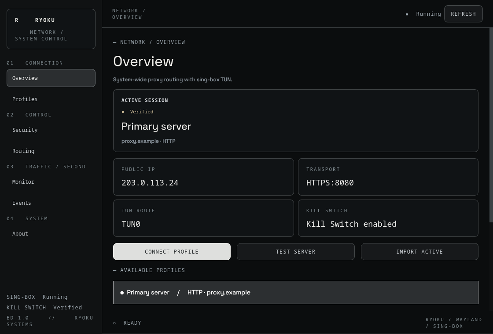

Choose your route
Keep HTTP, HTTPS and SOCKS5 servers in separate profiles. Import a proxy URL or your current configuration, then test the connection before switching.
PROFILES / TLS / CONNECTProxy profiles, routing and network protection.
A quiet, native dashboard for Ryoku.

01 / FROM PROFILE TO CONNECTION
A standalone app for your existing sing-box configuration. Manage your connection from one window or the system tray.
Keep HTTP, HTTPS and SOCKS5 servers in separate profiles. Import a proxy URL or your current configuration, then test the connection before switching.
PROFILES / TLS / CONNECTAdd exact domains, subdomain patterns and IP networks to routing exceptions. Detect local networks and review them before applying.
DOMAINS / CIDR / LOCAL NETWORKSInspect TUN throughput, active connections, public IP and sing-box logs. Connection details use an authenticated local API.
TRAFFIC / CONNECTIONS / LOGS02 / PROTECTION YOU CONFIRM
Kill Switch uses its own nftables table. The first activation is a trial: rules are removed automatically after 120 seconds unless you confirm.
Once confirmed, protection remains if sing-box stops and is restored at boot. Explicit direct exceptions remain available.
TO CHECK YOUR CONNECTION
03 / GET STARTED
Download the ready-to-install Arch package from the release. Pacman handles the application, system helper, desktop entry and repository dependencies.
Arch package & checksums ↗sudo pacman -U ./ryoku-proxy-1.0.0-2-any.pkg.tar.zst
ryoku-proxyRun the GUI as your normal user. System operations request authorization through polkit. No install script required. Manual Arch and Debian packages coexist with the signed pacman repository. See the documentation for repository activation and key verification. Not listed in AUR.
An existing sing-box configuration is required. The app manages a TUN, a proxy outbound and routing. It does not provision a fresh VPN setup.
Direct exceptions bypass protection. They intentionally go outside the proxy and Kill Switch. HTTP proxies do not provide general UDP tunneling.
Validate protection locally. Automated checks include offscreen Qt tests. Live Wayland and packet-level firewall scenarios still need validation. Keep local console access during the trial.